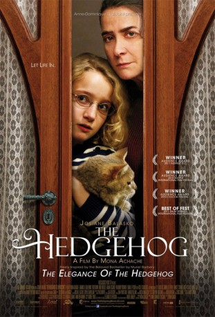
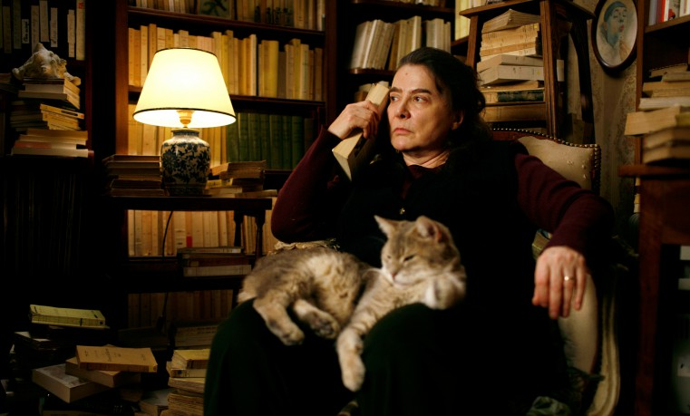
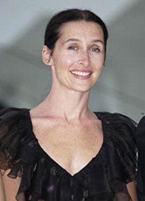
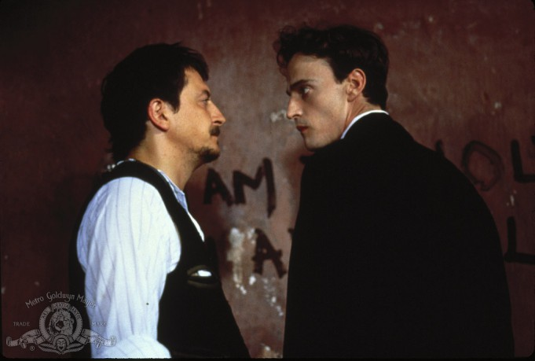
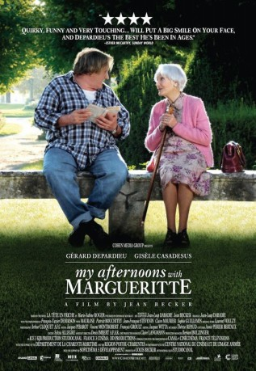

#1828 Die Eleganz der Madame Michel
 
 IMDB-Wertung: 7.4 / 10
IMDB-Wertung: 7.4 / 10  Metascore: 64
Metascore: 64 
Madame Michel ist Concierge in einem eleganten Pariser Wohnhaus. Auf den ersten Blick bringt sie alle typischen Attribute mit sich: Sie ist mürrisch, ungepflegt und unscheinbar. Um ihre Ruhe vor den herablassenden reichen Bewohnern des Hauses zu haben, versteckt sie ihre Leidenschaft für Bücher sorgfältig und schlüpft in die Rolle der kratzbürstigen Concierge. Auch die hochbegabte elfjährige Paloma lebt in ihrer eigenen Welt. Längst hat sie durchschaut, wie ärmlich ein Leben im Luxus sein kann und beschließt, sich am Tag ihres 12. Geburtstags das Leben zu nehmen. Beider Schicksal wandelt sich jedoch mit dem Einzug des geheimnisvollen Japaners Kakuro Ozu. Monsieur Ozu ahnt, dass sich hinter Madame Michels mürrischer Fassade ein liebenswertes Geheimnis verbirgt und lockt die barsche Concierge aus ihrem Winterschlaf.
Jahr: 2009
Dauer: 100 Minuten
FSK: 0
Land: Frankreich Studio: Senator FilmTonspuren:
Untertitel:
Auflösung: 1080p (1920x816) Größe: 5335 MB
Genre: Drama
Regisseur: Mona Achache
Drehbuch: Mona Achache, Muriel Barbery
Soundtrack: Gabriel Yared
Darsteller:
-  Josiane Balasko als Renée Michel
- Garance Le Guillermic als Paloma Josse
 Togo Igawa als Kakuro Ozu
Togo Igawa als Kakuro Ozu-  Anne Brochet als Solange Josse
- Ariane Ascaride als Manuela Lopez
-  Wladimir Yordanoff als Paul Josse
- Sarah Lepicard als Colombe Josse
- Jean-Luc Porraz als Jean-Pierre, le clochard
- Mona Heftre als Madame Meurisse
-  Gisèle Casadesus als Madame de Broglie
- Samuel Achache als Tibère
- Valérie Karsenti als La mère de Tibère
- Stéphan Wojtowicz als Le père de Tibère
- Isabelle Sobelmann als Anna Arthens
- Chantal Banlier als Maria Malavoin
- Jeanne Candel als La coiffeuse
- Miyako Ribola als Yoko
- Nao Inazawa als Cuisinier Japonais
- Jérémie als Leon
Datei: X:\2009(A-F)\Eleganz der Madame Michel, Die (2009, FSKo.Al., 1920x816).mkv seit 26.08.2015
Festplatte: HD 2008(G-Z)-2009(A-F)
 Es gibt insgesamt 91 Filme in der Gruppe '2009(A-F)'
Es gibt insgesamt 91 Filme in der Gruppe '2009(A-F)'